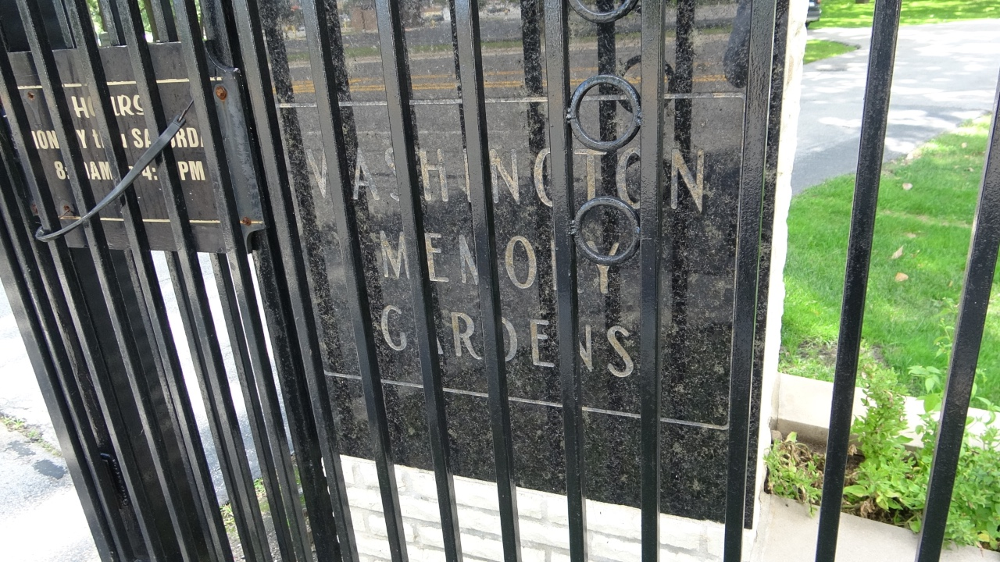

Washington Memory Gardens

Washington Memory Gardens is located in Homewood, Illinois, a village of Cook County. Homewood sits a few miles south of Chicago. Over twenty Blues musicians are buried here including Koko Taylor and Hubert Sumlin. Washington Memory Gardens’ address is 701 Ridge Road, Homewood, Illinois, 60430.